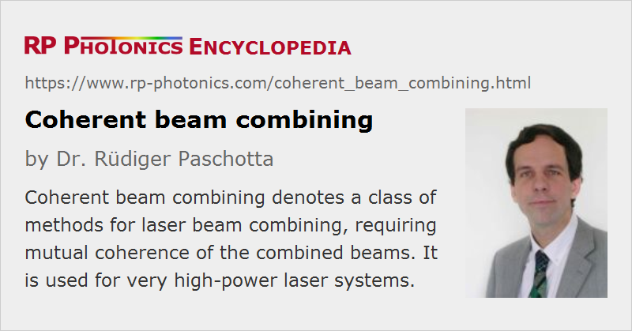

Coherent Beam Combining
Definition: a class of methods for beam combining, requiring mutual coherence of the combined beams
Alternative term: coherent beam addition
How to cite the article; suggest additional literature
Author: Dr. Rüdiger Paschotta
The term coherent beam combining (also called coherent beam addition) denotes one class of techniques within the more general technique of power scaling by beam combining. The goal is to combine several high-power laser beams so as to obtain a single beam not only with correspondingly higher power but also with more or less preserved beam quality and thus with increased radiance (brightness). Coherent combining also preserves the spectral bandwidth. An alternative class of techniques, discussed in a separate article, is spectral beam combining.
Side-by-side Combining Versus Filled-aperture Techniques
Techniques of coherent beam combining can be subdivided into
- side-by-side combining (tiled aperture) techniques, using a kind of phased array, leading to a larger beam size but reduced divergence
- filled-aperture techniques, where several beams are combined into a single beam with the same beam size and divergence, using e.g. some kind of N × 1 grating splitter.
A special case of a filled-aperture technique is coherent polarization beam combining [21]. Here, one can have only two input beams. However, as the output polarization is linear, one can repeat the combination as required.
Techniques for side-by-side combining may have been inspired by the earlier implementation of phased-array antennas in radio frequency and microwave transmitters and receivers. In the optical domain, the realization is more difficult due to the much smaller wavelength, which introduces correspondingly tighter mechanical tolerances.
In any case, mutual coherence of the combined beams is essential; typically the relative phase deviations need to be well below 1 rad r.m.s. This is illustrated for both mentioned sub-classes with two examples, which may not be ideal in a practical sense but conceptually simple:
- As a simplified example of side-by-side combining, four beams with flat-top intensity profiles of rectangular cross-section and flat phase profiles may be arranged to obtain a single beam with just two times the dimensions, or four times the area, and of course four times the power. (In practice, there may small gaps of low intensity between the beams, but this gap can in principle be fairly small.) If the beams are all mutually coherent, and the relative phases are properly adjusted to obtain essentially plane wavefronts over the whole cross-section, the resulting beam has a beam divergence which is only half that of the single beams. As a result, the beam quality is preserved, and the brightness can be four times that of the single beams. In practice, flat-top beam profiles may not be easily obtained (especially not of rectangular shape), and the gaps between the individual beams (i.e. the limited fill factor) will somewhat reduce the beam quality and brightness.
- To understand the principle of filled-aperture techniques, consider a beam splitter with 50% reflectance. Overlapping two input beams at this beam splitter will in general lead to two outputs, but a single output can be obtained if the two beams are mutually coherent and adjusted such that there is destructive interference for one of the outputs. This technique makes it easier to preserve the beam quality and does not require special beam shapes, but it may be less convenient for large numbers of emitters.
Apart from phase coherence, the beams involved must have a stable linear polarization, and the amplitude fluctuations should also not be excessive.
Methods for Obtaining Mutual Coherence
There are a variety of techniques to obtain the mutual coherence, which are briefly summarized in the following:
- Mutually coherent single-frequency signals can be generated by splitting the output of a low-power single-frequency laser and amplifying the resulting beams e.g. in high-power fiber amplifiers. As the amplifiers may introduce amplifier noise, particularly in the form of low-frequency phase disturbances (drifts) caused e.g. by temperature changes, an active feedback stabilization scheme may be required, acting e.g. on the pump power of each amplifier or using a phase modulator at each amplifier input. The resulting phase-coherent beams can then be combined either at multiple beam splitters, or with a tiled-aperture approach. The latter is probably more convenient for a larger number of beams. Such techniques have been applied particularly to arrays of fiber amplifiers [11], laser diodes [7], and ridge waveguide amplifiers [5].
- Alternatively, the phases of multiple high-power lasers can be synchronized by some kind of optical coupling. One approach is coupling via evanescent waves (leaky-wave coupling) with the goal of exciting a suitable supermode of the structure, which exhibits a high beam quality. This technique is applied particularly to laser diode arrays [2, 6], containing multiple active waveguides on one chip, where coupling can be obtained simply by placing the waveguides sufficiently closely. The technique may also be applied to multi-core optical fibers [16], or to separate fiber lasers [15]. However, a difficult challenge is to obtain not only tight coupling, but also coupling so that the phases are equal (rather than e.g. opposite) at the outputs of the waveguides.
- The latter problem is avoided with common-resonator techniques, where the beams are fully combined at the output coupler, but split within the resonator (laser resonator) to be amplified in different gain elements.
- There is a variant of the latter approach, also using a common resonator but with the optical path length in the different sub-resonators being significantly different [9, 10, 13]. For certain optical frequencies, there are supermodes where the reflections from the different sub-resonators add in-phase at the output coupler. If such supermodes lie within the gain bandwidth, lasing may occur only on those, resulting in efficient coherent beam combination. This method has been called self-organizing phase synchronization [12]. It does not require interferometric stabilization of the optical path lengths, and appears to be particularly suitable for fiber lasers.
- There are also schemes where phase synchronization is achieved using a nonlinear interaction such as stimulated Brillouin or Raman scattering. Such techniques are not yet highly developed.
There are also techniques of passive beam combining where the input lasers automatically get into mutually coherent oscillation (via some feedback or nonlinear interactions) even though they not single-frequency lasers. However, single-frequency operation is typically required for actively stabilized laser arrays.
A special case is the non-collinear coherent superposition of ultrashort pulse beams [24, 25]. Here, the term beam combining should actually not be used, since one only exploits the superposition of two clearly separate beams in the region around their foci. For some applications, that can be sufficient.
Coherent Beam Combining with Non-monochromatic Waves
Coherent beam combining is mostly done with monochromatic waves. However, it can also be applied to non-monochromatic input beams, as long as these are mutually coherent. For example, ultrashort pulses, having a broad optical spectrum, can be coherent combined [22]. It is then required that the path lengths are exactly matched such that the temporal peaks of the contributions of all input beams to the output occur at the same time. The broader the optical bandwidth, the more critical is that delay matching. For very broadband pulses (disregarding whether they are temporally stretched or not), arm length differences of only a few micrometers or even less are acceptable.
General Remarks
Overall, methods for coherent beam combining have not been very successfully applied, although many different approaches have been investigated. The main difficulty is to obtain phase coherence at high power levels in a sufficiently stable manner, working not only in a quiet laboratory environment but also in a mechanically more noisy industrial setting. Another challenge is the need to match precisely and stably wavefronts and polarization directions. Schemes using single-frequency signals and high-power fiber amplifiers may require additional measures to suppress problems with stimulated Brillouin scattering (SBS). In tiled-aperture systems, some degradation of beam quality is caused by a fill factor of less than unity, which leads to side lobes in the far-field beam pattern. In comparison, systems relying on spectral beam combining are more tolerant in various respects, but coherent combining may be used e.g. if a narrow emission spectrum is required.
Suppliers
The RP Photonics Buyer's Guide contains 4 suppliers for coherent beam combining optics.
Questions and Comments from Users
Here you can submit questions and comments. As far as they get accepted by the author, they will appear above this paragraph together with the author’s answer. The author will decide on acceptance based on certain criteria. Essentially, the issue must be of sufficiently broad interest.
Please do not enter personal data here; we would otherwise delete it soon. (See also our privacy declaration.) If you wish to receive personal feedback or consultancy from the author, please contact him e.g. via e-mail.
By submitting the information, you give your consent to the potential publication of your inputs on our website according to our rules. (If you later retract your consent, we will delete those inputs.) As your inputs are first reviewed by the author, they may be published with some delay.
Bibliography
| [1] | E. M. Philipp-Rutz, “Spatially coherent radiation from an array of GaAs lasers”, Appl. Phys. Lett. 26, 475 (1975), doi:10.1063/1.88216 |
| [2] | D. R. Scifres et al., “Phase-locked semiconductor laser array”, Appl. Phys. Lett. 33, 1015 (1978), doi:10.1063/1.90253 |
| [3] | D. G. Youmans, “Phase locking of adjacent channel leaky waveguide CO2 lasers”, Appl. Phys. Lett. 44, 365 (1984), doi:10.1063/1.94778 |
| [4] | M. Oka et al., “Laser-diode-pumped phase-locked Nd:YAG laser arrays”, IEEE J. Quantum Electron. 28 (4), 1142 (1992), doi:10.1109/3.135239 |
| [5] | K. H. No et al., “One dimensional scaling of 100 ridge waveguide amplifiers”, IEEE Photon. Technol. Lett. 6 (9), 1062 (1994), doi:10.1109/68.324669 |
| [6] | S. Saunders et al., “High power coherent two-dimensional semiconductor laser array”, Appl. Phys. Lett. 64, 1478 (1994), doi:10.1063/1.111992 |
| [7] | J. S. Osinski et al., “Phased array of high-power, coherent, monolithic flared amplifier master oscillator power amplifiers”, Appl. Phys. Lett. 66, 556 (1995), doi:10.1063/1.114011 |
| [8] | Y. Kono et al., “A coherent all-solid-state laser array using the Talbot effect in a three-mirror cavity”, IEEE J. Quantum Electron. 36 (5), 607 (2000), doi:10.1109/3.842103 |
| [9] | A. Shirakawa et al., “Coherent additional of fiber lasers by use of a fiber coupler”, Opt. Express 10 (21), 1167 (2002), doi:10.1364/OE.10.001167 |
| [10] | D. Sabourdy et al., “Power scaling of fibre lasers with all-fibre interferometric cavity”, Electron. Lett. 38, 692 (2002), doi:10.1049/el:20020505 |
| [11] | S. J. Augst et al., “Coherent beam combining and phase noise measurements of ytterbium fiber amplifiers”, Opt. Lett. 29 (5), 474 (2004), doi:10.1364/OL.29.000474 |
| [12] | M. L. Minden et al., “Self-organized coherence in fiber laser arrays”, Proc. SPIE 5335, 89 (2004), doi:10.1117/12.536444 |
| [13] | L. Liu et al., “Phase locking in a fiber laser array with varying path lengths”, Appl. Phys. Lett. 85, 4837 (2004), doi:10.1063/1.1826235 |
| [14] | T. Y. Fan, “Laser beam combining for high-power, high-radiance sources”, JSTQE 11 (3), 567 (2005), doi:10.1109/JSTQE.2005.850241 (review paper) |
| [15] | H. Bruesselbach et al., “Self-organized coherence in fiber laser arrays”, Opt. Lett. 30 (11), 1339 (2005), doi:10.1364/OL.30.001339 |
| [16] | L. Michaille et al., “Phase locking and supermode selection in multicore photonic crystal fiber lasers with a large doped area”, Opt. Lett. 30 (13), 1668 (2005), doi:10.1364/OL.30.001668 |
| [17] | T. M. Shay et al., “Self-synchronous and self-referenced coherent beam combination for large optical arrays”, JSTQE 13 (3), 480 (2007), doi:10.1109/JSTQE.2007.897173 |
| [18] | W. Liang et al., “Coherent beam combining with multilevel optical phase-locked loops”, J. Opt. Soc. Am. B 24 (12), 2930 (2007), doi:10.1364/JOSAB.24.002930 |
| [19] | N. Satyan et al., “Coherent power combination of semiconductor lasers using optical phase-lock loops”, IEEE Sel. Top. Quantum Electron. 15 (2), 240 (2009), doi:10.1109/JSTQE.2008.2011490 |
| [20] | A. A. Ishaaya et al., “Passive laser beam combining with intracavity interferometric combiners”, IEEE Sel. Top. Quantum Electron. 15 (2), 301 (2009), doi:10.1109/JSTQE.2008.2010409 |
| [21] | R. Uberna et al., “Coherent polarization beam combining”, IEEE J. Quantum Electron. 46 (8), 1191 (2010), doi:10.1109/JQE.2010.2044976 |
| [22] | A. Klenke et al., “Basic considerations on coherent combining of ultrashort laser pulses”, Opt. Express 19 (25), 25379 (2011), doi:10.1364/OE.19.025379 |
| [23] | A. Klenke et al., “530 W, 1.3 mJ, four-channel coherently combined femtosecond fiber chirped-pulse amplification system”, Opt. Lett. 38 (13), 2283 (2013), doi:10.1364/OL.38.002283 |
| [24] | L. Ionel and D. Ursescu, “Non-collinear spectral coherent combination of ultrashort laser pulses”, Opt. Express 24 (7), 7046 (2016), doi:10.1364/OE.24.007046 |
| [25] | M. Müller et al., “10.4 kW coherently combined ultrafast fiber laser”, Opt. Lett. 45 (11), 3083 (2020), doi:10.1364/OL.392843 |
See also: beam combining, interference, spectral beam combining, power scaling of lasers, high-power lasers, coherence, synchronization of lasers
and other articles in the categories lasers, methods
|  |
If you like this page, please share the link with your friends and colleagues, e.g. via social media:
These sharing buttons are implemented in a privacy-friendly way!